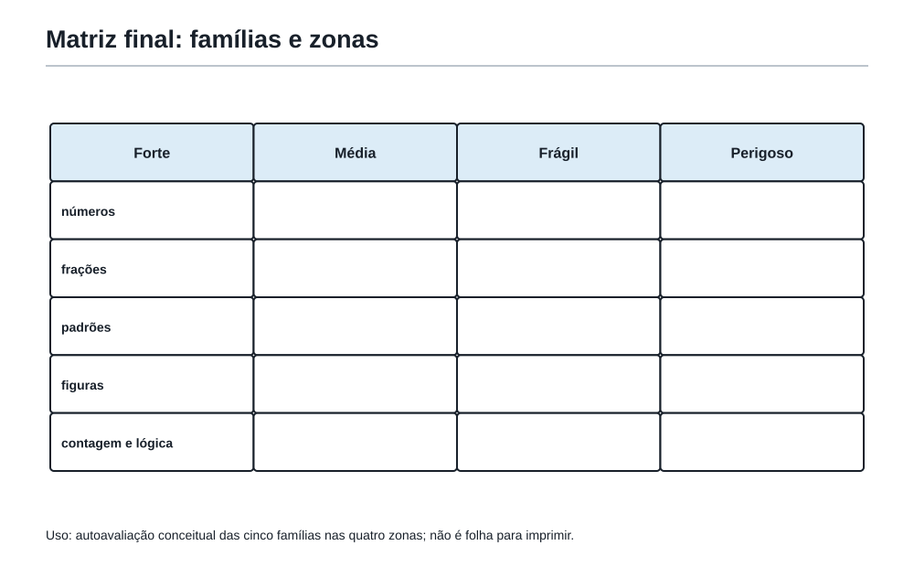

A Mochila Inteira
1. A ultima sala antes da prova
Felipe abriu a Mochila do Matematico sobre a mesa. Nao havia formulas soltas ali dentro. Havia perguntas, desenhos, tabelas, tentativas, restos, figuras, caminhos e maneiras de voltar quando uma porta parecia fechada.
O Professor da Academia nao disse: "Agora revise o Capitulo 1, depois o 2, depois o 3."
Disse:
"Na prova, os capitulos nao chegam com etiquetas. O problema mistura pistas. Sua tarefa e descobrir qual ferramenta quer conversar primeiro."
Esta e a funcao desta ultima sala. Nao e carregar a Mochila outra vez, objeto por objeto. E reconhecer que as ferramentas formam familias e que uma mesma pergunta pode pedir mais de uma delas.
Uma questao pode falar de sinos, mas pedir ciclos. Pode falar de ladrilhos, mas pedir padrao e area. Pode falar de uma regra de jogo, mas esconder uma impossibilidade por paridade. O enunciado muda de roupa; a ideia matematica continua ali.
Revisar, portanto, nao e voltar atras. E ganhar liberdade para escolher uma primeira jogada sem depender da ordem em que as ideias foram aprendidas.
2. A pergunta das tres portas
Antes de escolher uma tecnica, Felipe pode atravessar tres portas pequenas.
| Porta | Pergunta | O que ela evita |
|---|---|---|
| A pergunta final | O que exatamente preciso descobrir, provar ou contar? | Fazer contas que nao respondem ao problema. |
| A familia escondida | Que relacao aparece: ciclos, partes, medida, escolhas, pistas ou algo que nao muda? | Escolher uma formula pelo assunto aparente. |
| A primeira jogada | Qual acao pequena produz informacao: desenho, tabela, caso pequeno, lista, resto ou divisao em partes? | Esperar uma ideia completa antes de comecar. |
As tres portas nao prometem que a solucao inteira apareca de imediato. Elas deixam a questao menor e mais concreta.
Veja a diferenca:
"Preciso resolver esta questao de combinatoria."
e
"Preciso contar caminhos. Ha uma condicao. Vou contar todos e verificar se posso retirar os proibidos."
Na segunda frase, a Mochila ja comecou a trabalhar.
Ferramentas 136 e 137 da Mochila
136. Revisar por familias de ferramentas, nao apenas por ordem de capitulos.
137. Reconhecer a ideia central antes de escolher a tecnica.
3. As familias que conversam
As familias abaixo nao sao gavetas fechadas. Sao lugares de partida.
| Familia | Sinais frequentes | Primeiras jogadas possiveis |
|---|---|---|
| Numeros por dentro | divide sem sobra, fator, multiplo, maior divisor, reencontro | listar, fatorar, procurar divisores ou MMC/MDC |
| Restos e ciclos | volta, repete, dias, relogio, sobra | identificar o ciclo e eliminar voltas completas |
| Partes e medidas | parte de, fracao, total, area, escala, moldura | definir o inteiro, desenhar e manter unidades coerentes |
| Padroes e formas | cresce, fila, figura seguinte, borda, perimetro | fazer casos pequenos e separar o que cresce do que permanece |
| Possibilidades e pistas | quantos, escolhas, ordem, somente, exatamente | organizar casos, tabela, arvore ou total menos proibidos |
| Estrategia de prova | justificar, revisar, travar, voltar | escrever em degraus e marcar um ponto de retorno |
Uma questao pode comecar em uma familia e terminar em outra. Isso nao significa que voce escolheu errado. Significa que a conversa ficou mais interessante.
Exemplo curto: quando numeros conversam com restos
Um numero deixa resto 2 na divisao por 5 e resto 4 na divisao por 7. Qual e o menor numero maior que 10 com essa propriedade?
A pergunta pede um numero. A familia parece ser a dos restos, mas uma primeira jogada organizada e listar os numeros que deixam resto 2 por 5:
[ 12,17,22,27,32,37,42,\ldots ]
Entre eles, o primeiro que deixa resto 4 por 7 e 32.
Nao foi necessario decorar uma tecnica grande. Foi necessario tornar o resto visivel e testar um ciclo com cuidado.
Ferramenta 138 da Mochila
Conectar capitulos distantes quando o problema mistura ideias.
4. Quando uma parte precisa de um inteiro
Uma fracao nunca mora sozinha. Ela depende de um inteiro de referencia.
Considere um painel retangular de 12 quadradinhos por 8 quadradinhos. Uma faixa horizontal ocupa 1/4 da altura inteira, e uma faixa vertical ocupa 1/3 da largura inteira. Qual fracao do painel fica coberta por pelo menos uma das duas faixas?
Primeiro, a pergunta final pede uma fracao da area total. O inteiro e o painel todo:
[ 12\cdot8=96. ]
A faixa horizontal tem altura 2 e area (12\cdot2=24). A faixa vertical tem largura 4 e area (4\cdot8=32). Mas o retangulo de encontro, com 4 por 2, foi contado duas vezes. Sua area e 8.
Assim, a area coberta e:
[ 24+32-8=48. ]
Logo, a fracao coberta e:
[ \frac{48}{96}=\frac12. ]
A questao conversa sobre fracoes, area e sobreposicao. A primeira jogada nao era escolher uma formula; era desenhar mentalmente o inteiro e perguntar onde havia contagem dupla.
Quando uma parte parece confusa, procure primeiro o inteiro ao qual ela pertence.
5. Quando um padrao vira figura
Uma sequencia de figuras e uma maneira de fazer uma pergunta sobre o proximo caso. Geometria ajuda a ver por que ele cresce daquele jeito.
Imagine uma fila de quadrados unitarios: a Figura 1 tem um quadrado, a Figura 2 tem dois quadrados colados por um lado, a Figura 3 tem tres, e assim por diante. Qual e o perimetro da Figura 10?
Um aluno pode contar os lados da Figura 1, depois da 2 e depois da 3:
| Numero de quadrados | Perimetro |
|---|---|
| 1 | 4 |
| 2 | 6 |
| 3 | 8 |
O perimetro cresce 2 a cada quadrado novo, porque o lado de contato deixa de aparecer e surgem dois lados externos novos. Para 10 quadrados:
[ 4+9\cdot2=22. ]
Tambem se pode ver diretamente: ha 10 lados em cima, 10 embaixo e dois nas pontas. Total: 22.
O padrao nao serviu para adivinhar. Serviu para explicar o crescimento.
6. Quando contar exige uma condicao
Contar nao e apenas multiplicar escolhas. Primeiro e preciso descobrir se os grupos se sobrepoem, se a ordem importa e se ha casos proibidos.
De A ate B numa malha, sao necessarios 4 passos para a direita e 3 para cima. Quantos caminhos passam pelo ponto P, que fica apos 1 passo para a direita e 2 para cima a partir de A?
De A a P, ha uma direita e duas subidas. As posicoes das duas subidas podem ser escolhidas de:
[ \binom{3}{2}=3 ]
formas. De P a B, faltam tres direitas e uma subida, que podem ser ordenadas de:
[ \binom{4}{1}=4 ]
formas. Cada caminho ate P pode se juntar a cada caminho de P ate B. Portanto:
[ 3\cdot4=12. ]
A palavra "passam" criou uma condicao. Ela nao pediu todos os caminhos nem os que evitam P. Pediu que o trajeto fosse dividido em duas partes obrigatorias.
Ferramentas 139 e 140 da Mochila
139. Usar tres perguntas iniciais: o que pede, que familia aparece, qual primeira jogada.
140. Conferir se a ferramenta escolhida combina com a pergunta final.
7. Quando a melhor resposta e impossivel
Alguns problemas parecem convidar voce a acompanhar todas as jogadas. Antes disso, vale perguntar:
"Existe algo que nao muda?"
Em um tabuleiro ha 12 fichas pretas. Em cada jogada, duas fichas sao trocadas de cor. E possivel terminar com exatamente 17 fichas pretas?
Ao trocar duas fichas, a quantidade de fichas pretas pode aumentar 2, diminuir 2 ou continuar igual. Portanto, a paridade da quantidade de fichas pretas nao muda.
No inicio, 12 e par. No fim, 17 seria impar. Logo, o objetivo e impossivel.
Essa resposta nao e menor por dizer "nao". Ela precisa da razao que fecha a porta.
Nos problemas mistos, invariantes e paridade sao lanternas: nao mostram cada passo do caminho, mas mostram quais destinos nao podem ser alcancados.
8. Saber e reconhecer
Felipe consegue resolver um exercicio chamado "MMC". Mas na prova quase nunca existe uma placa dizendo "Use MMC aqui".
Saber uma ferramenta e conseguir usa-la quando ela vem anunciada. Reconhecer e perceber sua necessidade quando ela aparece disfarçada em sinos, luzes, voltas, plantao, calendario ou maquinas.
O treino de reconhecimento pode ser curto:
- leia apenas o enunciado e esconda a solucao;
- diga qual familia parece mais presente e por que;
- escreva uma primeira jogada antes de calcular;
- so entao desenvolva a solucao;
- no final, reconte o caminho com suas palavras.
Se a familia escolhida nao funcionar, isso nao transforma a tentativa em fracasso. Ela pode revelar que a pergunta final pedia outra coisa. Volte a primeira porta: o que eu realmente precisava descobrir?
Ferramentas 141 e 142 da Mochila
141. Montar um mapa pessoal da Mochila com zonas fortes, medias, frageis necessarias e perigosas.
142. Usar problemas-sintese para treinar reconhecimento.

Oficina9. Oficina Olimpica 16 - A Mochila Inteira
Os desafios desta oficina sao originais, em estilo OBMEP. Antes de olhar as correcoes, atravesse as tres portas: o que a pergunta pede, qual familia aparece e qual primeira jogada pequena abre uma pista.
Desafio 1 - A caixa que abre nos dois ritmos
Uma caixa eletrica acende uma luz azul a cada 6 minutos e uma luz amarela a cada 8 minutos. As duas acenderam juntas agora. Depois de quantos minutos elas acenderao juntas pela quinta vez, sem contar o instante atual?
Desafio 2 - O cartaz de duas faixas
Um cartaz mede 15 cm por 12 cm. Uma faixa horizontal ocupa 1/3 de sua altura e uma faixa vertical ocupa 1/5 de sua largura. As duas faixas se cruzam. Qual e a area coberta por pelo menos uma faixa?
Desafio 3 - A fila de quadrados
Uma figura e formada por 25 quadrados unitarios em uma unica fila, cada um colado ao seguinte por um lado. Qual e o perimetro da figura?
Desafio 4 - A rota com visita obrigatoria
Em uma malha, para ir de A a B sao necessarios 5 passos para a direita e 4 para cima. O ponto P fica apos 2 passos para a direita e 1 para cima a partir de A. Quantos caminhos de A ate B passam por P?
Desafio 5 - As moedas viradas
Sobre uma mesa ha 19 moedas, das quais 11 mostram cara. Em cada jogada, exatamente duas moedas sao viradas. E possivel chegar a uma situacao com 8 moedas mostrando cara? Justifique.
10. Correcoes comentadas
Desafio 1
"Juntas de novo" aponta para reencontro de ciclos. O MMC de 6 e 8 e 24. Os cinco reencontros depois de agora acontecem aos 24, 48, 72, 96 e 120 minutos.
Resposta: 120 minutos.
Desafio 2
A area total do cartaz e (15\cdot12=180) cm2.
A faixa horizontal tem altura (12/3=4) cm e area (15\cdot4=60) cm2. A faixa vertical tem largura (15/5=3) cm e area (3\cdot12=36) cm2.
A intersecao, de 3 por 4, tem area 12 cm2 e foi contada duas vezes. Assim:
[ 60+36-12=84. ]
Resposta: 84 cm2.
Desafio 3
Ha 25 lados no alto, 25 embaixo e dois nas extremidades. Portanto:
[ 25+25+2=52. ]
Resposta: 52 unidades de comprimento.
Desafio 4
De A a P, precisamos ordenar duas direitas e uma subida. Ha:
[ \binom{3}{1}=3 ]
caminhos. De P a B faltam tres direitas e tres subidas. Ha:
[ \binom{6}{3}=20 ]
caminhos. Logo, os caminhos que passam por P sao:
[ 3\cdot20=60. ]
Resposta: 60 caminhos.
Desafio 5
A quantidade de caras pode mudar em 2, em -2 ou em 0 a cada jogada. Sua paridade e preservada. Comecamos com 11 caras, numero impar; 8 e par. Portanto, nao e possivel chegar a 8 caras.
Resposta: nao e possivel.
11. O mapa pessoal da Mochila
O mapa pessoal nao serve para comparar Felipe com outra pessoa. Ele serve para decidir o proximo retorno.
| Familia | Minha zona hoje | Evidencia que sustenta a decisao | Proximo retorno pequeno |
|---|---|---|---|
| Numeros e ciclos | Forte / media / fragil | Reconheco reencontros? Explico o MMC? | Reconstruir um problema de ciclos. |
| Partes e medidas | Forte / media / fragil | Defino o inteiro? Vejo sobreposicao? | Desenhar uma area composta. |
| Padroes e formas | Forte / media / fragil | Consigo justificar o crescimento? | Fazer tres casos e explicar a regra. |
| Possibilidades e pistas | Forte / media / fragil | Organizo casos sem repetir? | Contar um caminho com condicao. |
| Estrategia e escrita | Forte / media / fragil | Registro a ideia em degraus? | Recontar uma solucao curta. |
Nao e preciso preencher uma tabela perfeita. Basta uma decisao honesta: qual ferramenta precisa ser mantida viva, qual ponto medio tem uma ponte curta e qual fragilidade precisa de uma pergunta de emergencia?
Ferramentas 143 e 144 da Mochila
143. Ver a prova como conversa entre ideias, nao como lista de formulas.
144. Recontar a solucao com suas proprias palavras.
12. O que significa levar a Mochila
Levar a Mochila nao e lembrar tudo de cor. E chegar a uma questao nova e saber comecar de algum lugar honesto:
- ler a pergunta inteira;
- reconhecer uma familia possivel;
- fazer uma primeira jogada que produza informacao;
- corrigir a rota quando ela nao responde ao que foi pedido;
- escrever o que ja foi descoberto;
- voltar com calma quando for preciso.
Essa autonomia vale antes, durante e depois de uma prova. O ouro nao e uma resposta isolada. E o jeito de pensar que continua disponivel quando o enunciado muda.
O Professor fechou a Mochila e disse:
"Agora voce nao precisa procurar o capitulo certo. Precisa ouvir a conversa certa."
As ferramentas da Mochila nesta sala
- Revisar por familias de ferramentas, nao apenas por ordem de capitulos.
- Reconhecer a ideia central antes de escolher a tecnica.
- Conectar capitulos distantes quando o problema mistura ideias.
- Usar tres perguntas iniciais: o que pede, que familia aparece, qual primeira jogada.
- Conferir se a ferramenta escolhida combina com a pergunta final.
- Montar um mapa pessoal da Mochila com zonas fortes, medias, frageis necessarias e perigosas.
- Usar problemas-sintese para treinar reconhecimento.
- Ver a prova como conversa entre ideias, nao como lista de formulas.
- Recontar a solucao com suas proprias palavras.
Frase da Academia
Revisar nao e carregar tudo de novo. E descobrir como tudo conversa dentro da Mochila.
Fechamento
Com esta sala, a fase pratica da revisao editorial esta concluida. O proximo trabalho pertence a montagem final do livro: conferir continuidade, rigor, figuras e voz sem apagar o caminho construido.